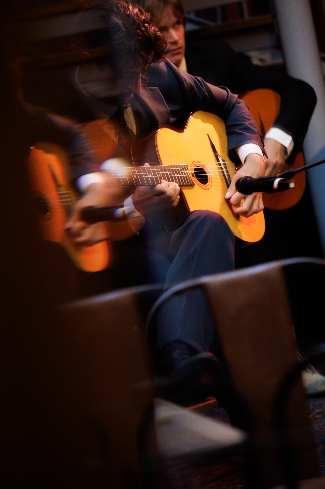

Se Bandet Live
Video
Om Bandet
Bakgrund
The Django Quartet grundades 2026 i Stockholm av fyra musiker med en gemensam förkärlek för manouche-jazz i den tradition som Django Reinhardt och Stéphane Grappelli etablerade i Quintette du Hot Club de France. Besättningen består av sologitarr, kompgitarr, fiol och kontrabas — helt akustiskt, utan trummor eller förstärkare, på samma sätt som förebilderna spelade på 1930-talet.
Vi anlitas för allt ifrån privata fester och mingel, där musiken ska skapa en stämning utan att ta över samtalet, till klubbar och restauranger där publiken kommer för att lyssna. Repertoaren anpassas efter tillfället: samma arrangemang fungerar lika bra som diskret bakgrundsmusik under en middag som i ett konsertrum med full uppmärksamhet.
Instrumenten är valda med samma omsorg som musiken: gitarrer i Selmer-Maccaferri-stil, samma modell Django själv spelade, fiolen svävande i höjden och kontrabasen i djupet. Tillsammans ger de en klang som känns igen från 1930-talets Paris — varm, akustisk och utan en enda kabel i vägen.
Media
Video- & Bildmaterial
Fria att använda redaktionellt och i marknadsföring av bokade spelningar. Ange gärna fotokredit. (Finns i högre upplösning på begäran.)



Foto: Mariscal Fotografia
För Ljudtekniker & Arrangörer
Teknisk Rider
Teknisk Rider
The Django Quartet — akustisk uppsättning, 4 musiker- Besättning
- 2 gitarrer, fiol, kontrabas.
- Ljudalternativ
-
Vi erbjuder tre nivåer av ljudsättning, beroende på lokal och önskat resultat:
Helt akustiskt — 0 kanaler. Inga mikrofoner alls. Rekommenderas för mindre, intima lokaler och bakgrundsmusik där rummets egen akustik räcker, eller utomhus där man saknar ström/el.
Kardioidmikrofon för hela bandet — 1 kanal. En mikrofon fångar ensemblen samlat. Rekommenderas för medelstora rum som behöver viss förstärkning men inte en full mix. Detta alternativ behöver inga monitorer men högtalare.
Individuella instrumentmikrofoner — 4 kanaler. En mikrofon per musiker (gitarrer, fiol, kontrabas). Rekommenderas för större lokaler, konsertrum eller när ljudteknikern vill kunna balansera varje instrument separat. Högtalare på plats och gärna monitorer.
Val av nivå och exakt mikrofonuppsättning bekräftas med ljudtekniker inför spelningen. - Scenyta
- Plats för 2 stolar för gitarristerna, kontrabas och fiol står.
- Notställ
- 2–4 st, gärna med belysning om spelningen sker i svagt ljus.
- Ankomst & soundcheck
- Tillträde till scenen minst 45–60 minuter före speltid för uppställning och ljudavstämning.
- Kontaktperson på plats
- Ange gärna namn och telefonnummer till ansvarig kontaktperson/ljudtekniker i bokningsbekräftelsen.
- Frågor om riden
- bergstrom.philip@gmail.com
Ovanstående är standardförutsättningar för en akustisk spelning och anpassas gärna efter er lokal. Hör av er i god tid om ni har frågor eller särskilda begränsningar kring scen, ljud eller el.
Kontaktperson
Hör av er
Kontaktperson för bokningsförfrågningar eller andra frågor.
Philip Bergström
bergstrom.philip@gmail.com +46 73 322 39 19Berätta datum, lokal och speltid — så återkommer vi så snart som möjligt!